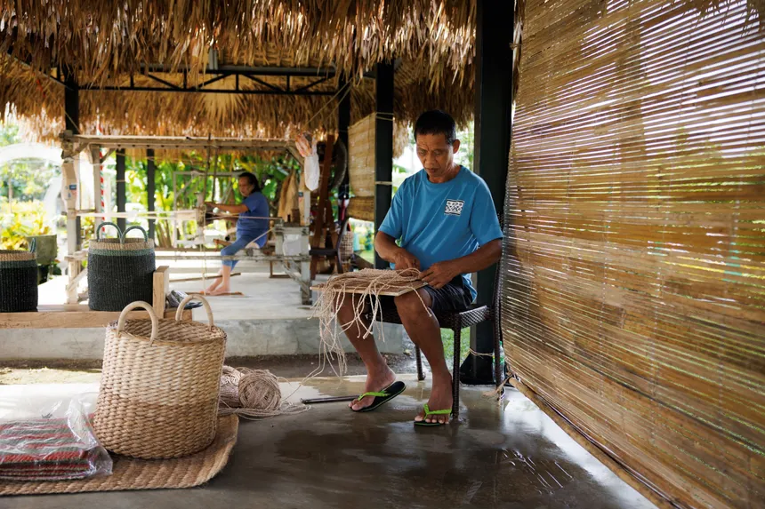
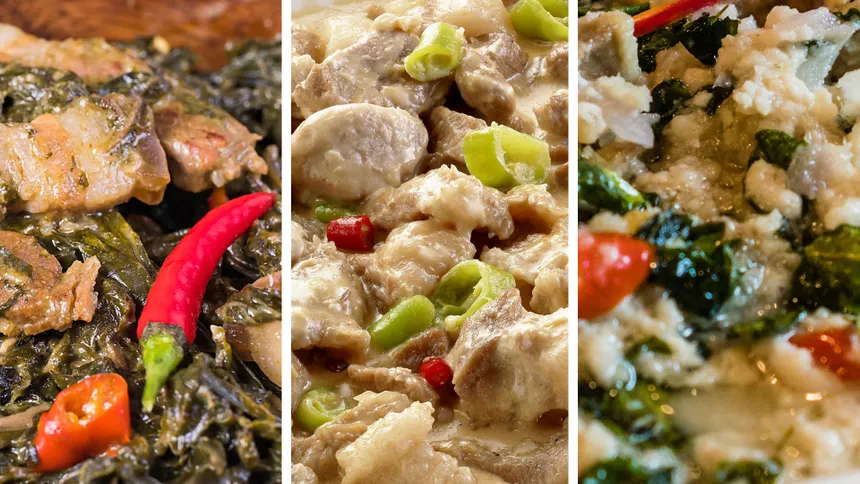
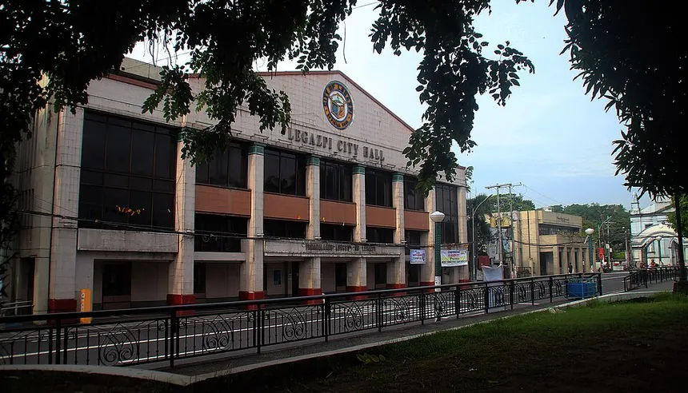

Discover Legazpi
Explore
Take a glimpse into Legazpi’s character, from everyday streets to open horizons. Choose a card to see the story unfold...
Loading spots…
What defines us
Legazpi City
Highlights
Four pillars that shape the identity of Legazpi - a city defined by natural wonder, deep roots, rich flavors, and a spirit that keeps moving forward.

Mayon Volcano
The world's most perfect cone ever-present on the horizon,
visible from every corner of the city.
Legazpi's most iconic landmark and a constant reminder of nature's scale.

Culture & Heritage
From the Ibalong Monument to the eskinitas of Brgy. 25, Legazpi's streets carry centuries of Bicolano history -
lived-in, celebrated, and proudly passed down.

Food & Cuisine
Bicol Express, laing, gulay na natong, pili sweets -
the food here is bold, coconut-rich, and unmistakably Bicolano.
Every meal tells you exactly where you are.

Resilience & Modern Progress
Shaped by typhoons and volcanic activity, Legazpi keeps rebuilding and moving forward -
a waterfront boulevard, a growing city center, and a people who don't stop.